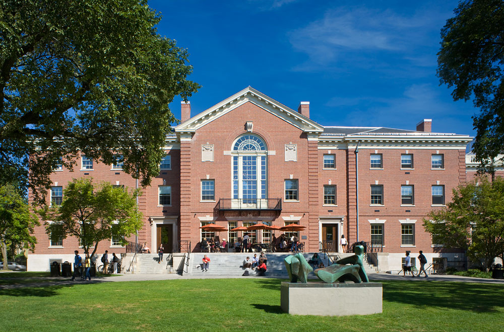

Brown is located in Providence, Rhode Island. Its 6,455 undergraduate students enjoy a 146 acre campus modelled off of Harvard's campus. The campus setting is urban. Brown has a 8:1 student to faculty ratio and the most popular majors are economics, biological sciences, engineering, international relations, and political science. Brown's academics are particularly known for its accelerated programs; many undergraduates take pre-professional programs, graduate with dual degrees, or conduct a Masters immediately after their undergraduate experience. Greek life is well integrated in Brown, with about 10% of the Brown Bears participating. Brown's most notable alumni include Emma Watson and Ted Turner.
